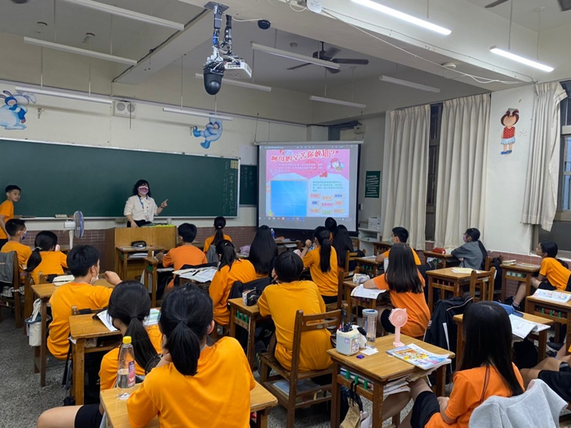

從 HIME 到 HIWE — 扎根在地，放眼未來
惠文高中始終秉持著「從 HIME 到 HIWE」的全人教育理念。我們深信，教育的意義不僅在於知識的傳遞，更在於引導孩子從探索自我、肯定自我（ME）出發，進而長出關懷社會、擁抱群體與世界（WE）的開闊胸襟。推動本土語教育，正是實踐這份理念的重要橋樑。
語言是文化的靈魂，透過本土語的學習與浸潤，我們期盼帶領學生扎根在地，尋回對自身文化的認同；更在認識臺灣多元族群之美的過程中，培養出深刻的同理心與包容力。
在這裡，語言不再只是課本上的文字，而是師生共創、充滿溫度的生活實踐。邀請您一同走進這片充滿活力的文化園地，見證惠文的學子們如何透過母語的傳承，串聯起更美好的「我們」（HI-WE）！
配合九年一貫課程，實施本土語言教學，落實本土教育。
提供自然的語言學習環境，增進學生本土語言聽、說、讀、寫能力。
培養學生應用族群語文基本能力，以擴充生活經驗，拓展學習領域。
培養學生探索與熱愛族群語文之興趣，並養成主動學習的習慣。
學習利用工具書及結合資訊網路以擴展族群語文之學習。
國中端與高中端學生的本土語選課說明與分組協同教學方式。
一鍵連結最新本土語課表系統，掌握每週上課時間。
記錄教師研習、學生比賽與各項豐富的本土語活動。
展示學生精彩成果，靜態作品與動態成果一次呈現。
依學制分流，跑班協同教學
國中一至二年級應就閩南語、客家語、原住民語等三種本土語言任選一種修習；為鼓勵持續學習同一種語言，若有更換類組之需求，應持續至少一年方得更換。
學校開課時，以班群方式打破班級界限，依學生選習語言類別編組，實施跑班式協同教學，必要時斟酌降低開班人數。
高中一年級應就閩南語、客家語、原住民語等三種本土語言任選一種修習；為鼓勵持續學習同一種語言，若有更換類組之需求，應持續至少一年方得更換。高二以深廣選修課程為主。
學校開課時，以班群方式打破班級界限，依學生選習語言類別編組，實施跑班式協同教學，必要時斟酌降低開班人數。
| 學制 | 年級 | 必修 / 選修 | 可選語言 |
|---|---|---|---|
| 國中 | 一年級 ~ 二年級 | 必修（擇一） | 閩南語 · 客家語 · 原住民語 |
| 高中 | 一年級 | 必修（擇一） | 閩南語 · 客家語 · 原住民語 |
| 高中 | 二年級 | 深廣選修 | 依開課語言為主 |
| 項目 | 內容 |
|---|---|
| 課程名稱 | 本土語 |
| 實施年級 | 國一（全年級共10班）、國二（10班）、高一（全年級共10班） |
| 學分數 | 上下學期各1學分（共2學分） |
| 師資規劃 | 校內師資3名（閩南語、手語、客語） 校外師資5名（閩南語、手語、客語） 直播共學兩時段（原民語） |
| 開班情形 | 綁班跑班上課 |
| 班級 | 語言 |
|---|---|
| 101、102、105 | 閩南語＋客語 |
| 106、107、110 | 閩南語＋客語＋原住民語直播共學 |
| 103、104、108 | 閩南語 |
| 109 | 閩南語＋手語 |
| 語言 | 教室 |
|---|---|
| 閩南語 | 原班教室 |
| 手語（鄭宇惠） | 多功能教室 2 樓 |
| 客語（傅瑩娟） | 自主教室 5 樓之 2 |
| 班級 | 語言 |
|---|---|
| 201、203 | 閩南語＋客語 |
| 205、208 | 閩南語＋客語＋手語 |
| 204、206、207 | 閩南語＋客語＋手語 |
| 209、210、202 | 閩南語＋手語 |
| 語言 | 教室 |
|---|---|
| 閩南語 | 原班教室 |
| 手語（鄭宇惠、石凱婷） | 多功能教室 2 樓 |
| 客語（傅瑩娟、賴憶婆） | 自主教室 5 樓之 2 |
| 班級 | 語言 |
|---|---|
| 403、404 | 閩南語＋手語 |
| 402、411 | 閩南語＋客語＋手語＋原住民語直播共學 |
| 405、406、407 | 閩南語＋客語＋手語 |
| 408、409、410 | 閩南語＋客語＋手語 |
| 語言 | 教室 |
|---|---|
| 閩南語 | 原班教室 |
| 手語（鄭宇惠、石凱婷） | 多功能教室 2 樓 |
| 客語（傅瑩娟） | 自主教室 5 樓之 2 |
掌握每週本土語上課時間
教師研習 · 學生比賽 · 節日活動
學校積極辦理教師共備工作坊，引導本土語師資相互交流教學策略與教案設計；並定期舉辦數位資源融入研習，協助教師善用多媒體工具，豐富課堂教學內容。
為深化本土語文化底蘊，學校特別規劃結合傳統工藝的體驗研習，讓教師在親身實作中感受族群文化之美，進而將生活化的素材融入日常教學，使課堂更具溫度與感染力。
為鼓勵學生展現本土語學習成果，學校定期辦理各項語言競賽，涵蓋閩南語演說及朗讀比賽、客語演說及朗讀比賽等，提升學生語言表達能力與自信心。
比賽照片區
（請上傳照片至此）
配合節日時令，學校將閩南語融入各項校園活動，讓語言學習自然融入學生的生活情境，增添節慶趣味的同時也深化母語文化認同。

學生成果展廳 — 靜態作品 · 動態成果
這裡是惠文學子本土語學習成果的展示空間。無論是靜態作品（書寫作業、海報設計）或是動態成果（朗讀錄音、演說影片），都將在此一一呈現。
作品一
（請嵌入圖片）
作品二
（請嵌入圖片）
作品三
（請嵌入圖片）
作品四
（請嵌入圖片）
影片成果一
（請嵌入 YouTube / Google 雲端影片）
影片成果二
（請嵌入 YouTube / Google 雲端影片）